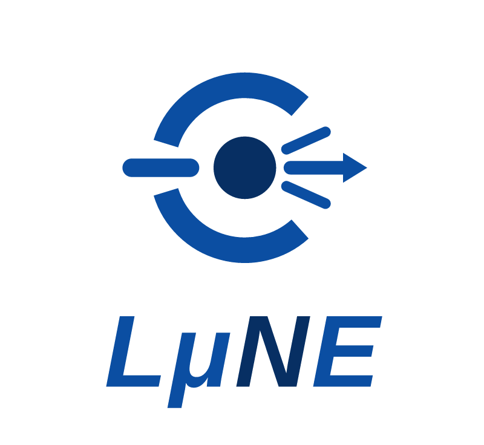
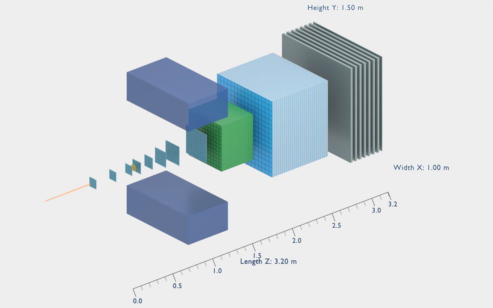
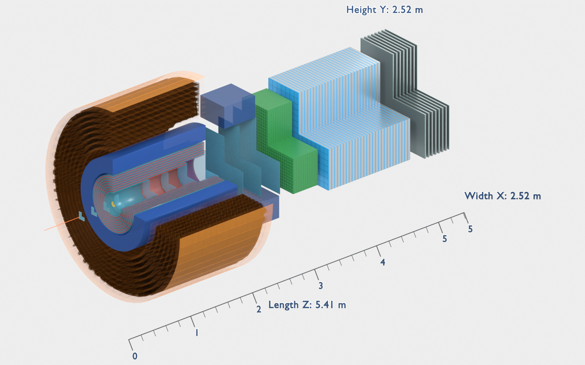
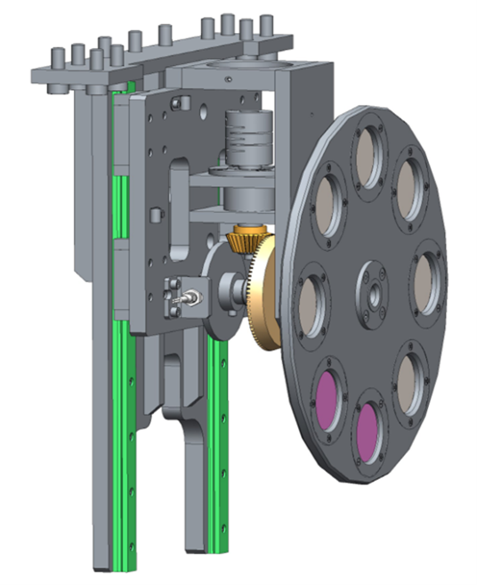
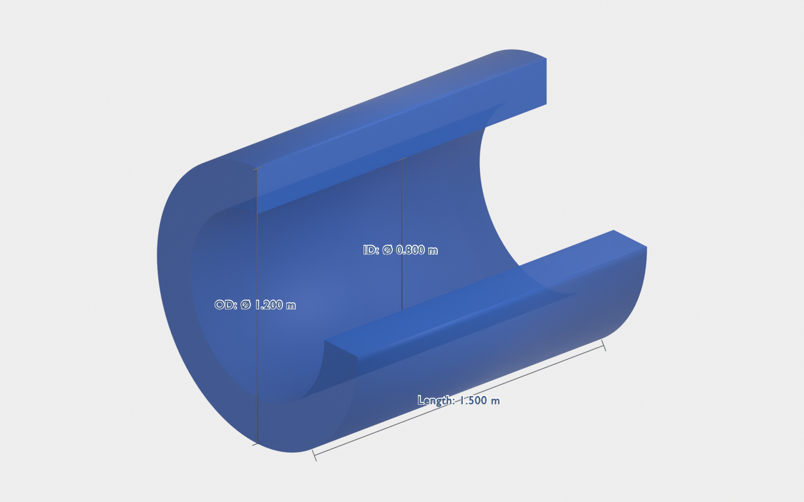
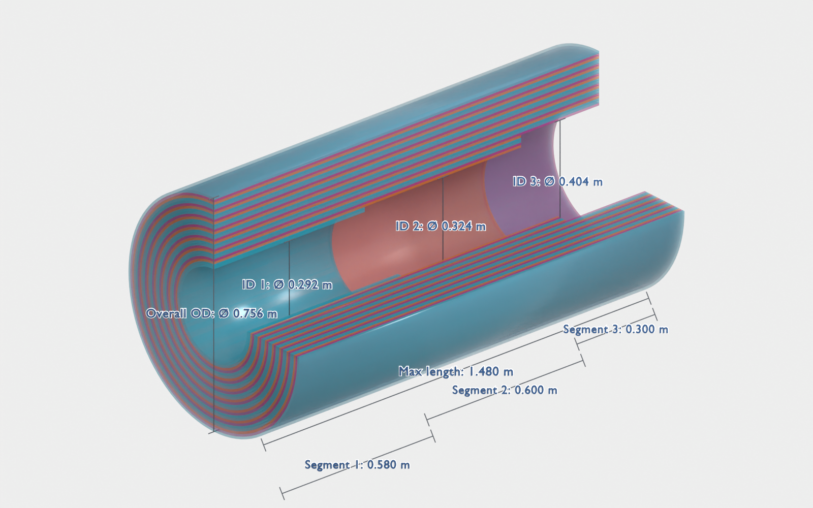
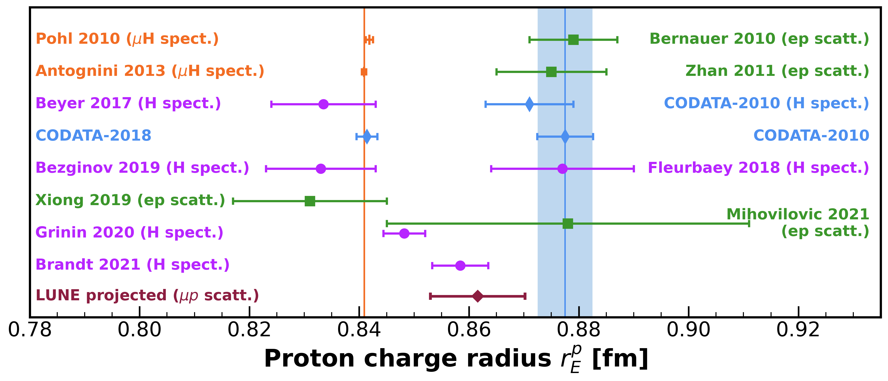
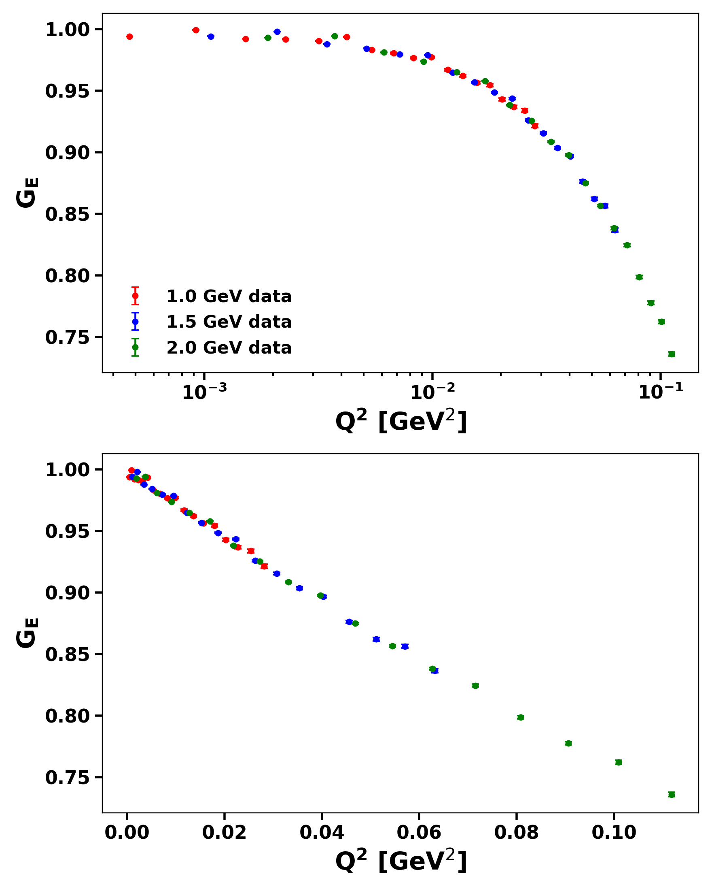
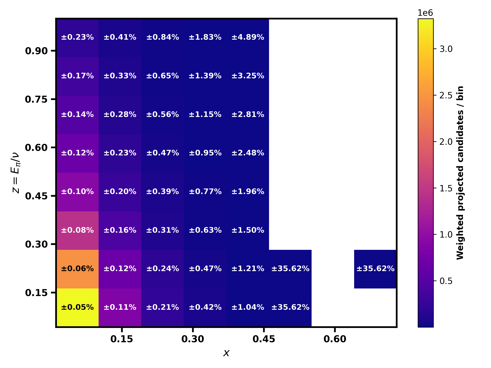
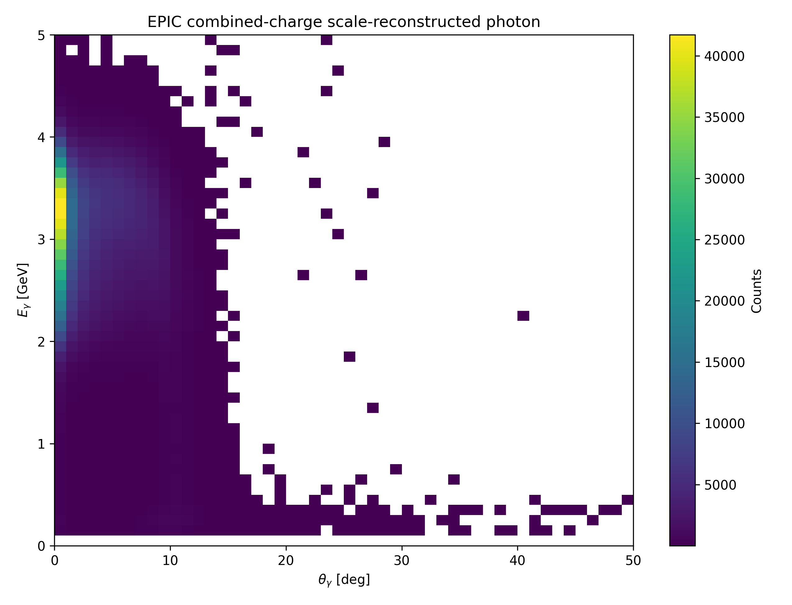

01
弹性散射与形状因子
在低动量转移（低 Q2）区间，弹性散射截面随 Q2 的变化斜率决定质子电荷半径。 截面由电形状因子 GE(Q2) 与磁形状因子 GM(Q2) 共同决定； 通过小角度精确测量并外推至 Q2 → 0 即可得到半径。

Low-energy Muon-Nucleon scattering Experiment
依托 HIAF 高强度缪子束流（0.5–7.5 GeV/c），LUNE 将利用 μ+ 与 μ− 双电荷态束流开展精确散射测量，衔接低能电子装置与未来高能轻子-离子对撞机之间的能区空白。 实验将测定质子（氘核）电荷半径、测量核子电磁形状因子，并研究量子电动力学与强相互作用的动力学。
Principle
缪子是质量约为电子 207 倍的点状轻子。缪子-质子弹性散射的角分布由质子电磁形状因子决定， 而形状因子编码了质子（氘核）电荷的空间分布。
在低动量转移（低 Q2）区间，弹性散射截面随 Q2 的变化斜率决定质子电荷半径。 截面由电形状因子 GE(Q2) 与磁形状因子 GM(Q2) 共同决定； 通过小角度精确测量并外推至 Q2 → 0 即可得到半径。
缪子质量大、穿透能力强，能够探测核的内部。μ+ 与 μ− 散射的系统对比可用于独立研究双光子交换（TPE）效应——电子散射中重要的量子电动力学修正。
Phase I：采用二极磁体谱仪开展低 Q2 弹性 μ–p 散射测量， 以 1.0% 精度测定质子电荷半径。Phase II：升级为 2 T 螺线管谱仪， 开展 DIS、SIDIS、DVCS 等核子三维结构研究以及超越标准模型的物理搜索。
Physics
从质子半径之谜到核子的力学结构，LUNE 实验计划覆盖核物理与粒子物理中的多个基本问题。
电子散射、电子能谱以及缪子氢原子谱学给出的质子电荷半径数值之间存在约 4% 的分歧。 LUNE 将以缪子探针提供独立测量结果，为解决这一分歧提供关键输入。
通过 μ+ 与 μ− 束流的系统性对比，可对双光子交换效应进行受控研究， 并对量子电动力学及辐射修正理论框架进行严格检验。
Phase II 的高统计量 DIS、SIDIS 与 DVCS 数据样本将用于研究横动量依赖分布（TMD）、 广义部分子分布（GPD）、引力形状因子，以及核子内夸克的轨道动力学。
轻核电荷半径的精确测定、库仑畸变修正、核介质修改效应（EMC 效应）， 以及远期的短程关联（SRC）研究。
高强度缪子束为新物理搜索提供了独特窗口，包括带电轻子味破坏过程、 与缪子 g−2 相关的强子贡献，以及暗光子等轻新粒子的精确搜索。
Detector
HIAF-HIRIBL 缪子束线（长 192 m，动量接受度 ±2%）为分阶段建设的探测器系统提供束流。 Phase I 针对低 Q2 弹性散射的精确测量优化；Phase II 通过超导螺线管内的筒部探测器 扩展接受度与粒子鉴别能力。完整技术方案见白皮书（第 3 章）。





Projection
以下结果基于 HIRIBL 束流模拟与生成器级估算（弹性散射采用 ESEPP，DIS/SIDIS 采用 DJANGOH，DVCS 采用 EpIC）， 假设一个有效运行年度的取数时间。
| 物理过程 | 束流 | 靶 | 截面 (pb) | 年产额 |
|---|---|---|---|---|
| 弹性散射（1°–10°） | 1.0 GeV/c | CH2 (5 mm) | 8.32 × 10⁸ | 1.06 × 10⁹ |
| 弹性散射（1°–10°） | 1.5 GeV/c | CH2 (5 mm) | 3.75 × 10⁸ | 0.47 × 10⁹ |
| 弹性散射（1°–10°） | 2.0 GeV/c | CH2 (5 mm) | 2.09 × 10⁸ | 0.27 × 10⁹ |
| 遍举 DIS | 5.0 GeV/c | LH2 (50 cm) | 144 × 10³ | 9.68 × 10⁶ |
| SIDIS（K±） | 5.0 GeV/c | LH2 (50 cm) | 8.8 × 10³ | 5.91 × 10⁵ |
| DVCS | 5.0 GeV/c | LH2 (50 cm) | 0.99 × 10³ | 6.65 × 10⁴ |
| 质子电荷半径测量误差预算（Phase I） | |
|---|---|
| 统计误差 | 0.12% |
| 角度刻度与分辨 | 0.10% |
| QED 辐射修正 | 0.16% |
| 碳本底扣除 | 0.50% |
| 本底、分箱、接受度等 | 0.50% |
| 系统误差合计 | 0.75% |
| 总预期误差 | < 1.0% |
误差预算摘自白皮书表 20；数值为代表性估算，将随完整探测器模拟与数据驱动刻度进一步更新。
弹性 μ–p 散射测量质子电荷半径的预期相对精度
年度遍举 DIS 事例数，用于核子结构研究
在该能区利用缪子束探索 GPD（> 6 × 10⁴ DVCS 事例/年）




Collaboration
LUNE 合作组由来自以下单位的科研人员组成：
完整白皮书见 arXiv: 2608.29509。
{kind=link}
{kind=link}
{kind=link}
{kind=link}